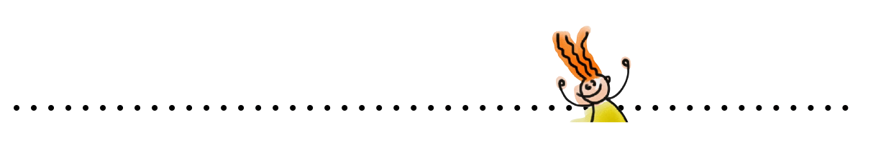

the first module
in 2020
in 2020
<내 관심사와 나 자신에 대해서 알아가는 모듈>
러닝플랜을 작성하며 그동안의 나 자신에 대해 알고 성찰할 수 있었고, ’관심사 맵’을 만들며
내 관심사에 대해 알아보는 계기가 되었다. 알아본 관심사를 바탕으로 개인주제 프로젝트 주제를 선정했다.
내 관심사에 대해 알아보는 계기가 되었다. 알아본 관심사를 바탕으로 개인주제 프로젝트 주제를 선정했다.
My project
민화와 서양화를 콜라보 해보자
∙ 내 관심 분야인 미술 안에서도 두가지 장르를 엮어 새로운 작품을 만들어보는 개인 프로젝트를 진행했다.
∙ 첫 개인주제를 해보면서 프로젝트 할 때 시간, 계획 관리나 과정, 주제 선정 방법 등을 학습해서 다음 모듈
개인주제때 적용하여 전보다 수월하게 진행할 수 있게 되었다.
∙ 첫 개인주제를 해보면서 프로젝트 할 때 시간, 계획 관리나 과정, 주제 선정 방법 등을 학습해서 다음 모듈
개인주제때 적용하여 전보다 수월하게 진행할 수 있게 되었다.

the second module
in 2020
in 2020
Team project
페트병의 비접착식 라벨을 제거하지않아 재활용되기 어려운 문제를 해결하자

학습을 통해 페트병 라벨의 종류, 소재, 재활용률 등을 새롭게 알게 되었고, 원인맵과 설문조사,인터뷰를
진행하여 ‘라벨을 제거하기 힘들거나 귀찮다’라는 원인을 도출하였다.
인터뷰를 위해 페트병 수거함을 만들어 빈 페트병을 모았는데, 직접 절취형 페트병 라벨을 제거해보니 제거하기 쉽지 않았다.
도출한 원인을 바탕으로 절취형 라벨의 절취 구멍을 확대하고,
손가락으로 잡고 쉽게 뜯어낼 수 있도록 잡는 부분은 페트병에
밀착 되어있지 않도록 제작하는 솔루션을 제시 하였다.
추가로 라벨 뒷면에 결과를 넣는 1+1 이벤트 등으로 자연스럽게
라벨을 제거시키는 방안도 내어, 이를 도식화 시켜보았다.
이러한 팀 프로젝트 과정들을 통해 문제를 객관적으로 바라보는
관점과 팀워크 등이 성장하였다.
진행하여 ‘라벨을 제거하기 힘들거나 귀찮다’라는 원인을 도출하였다.
인터뷰를 위해 페트병 수거함을 만들어 빈 페트병을 모았는데, 직접 절취형 페트병 라벨을 제거해보니 제거하기 쉽지 않았다.
도출한 원인을 바탕으로 절취형 라벨의 절취 구멍을 확대하고,
손가락으로 잡고 쉽게 뜯어낼 수 있도록 잡는 부분은 페트병에
밀착 되어있지 않도록 제작하는 솔루션을 제시 하였다.
추가로 라벨 뒷면에 결과를 넣는 1+1 이벤트 등으로 자연스럽게
라벨을 제거시키는 방안도 내어, 이를 도식화 시켜보았다.
이러한 팀 프로젝트 과정들을 통해 문제를 객관적으로 바라보는
관점과 팀워크 등이 성장하였다.
My project
사연이 담긴 액세서리 만들기
∙ 개인주제프로젝트 주제를 통일성 있게 이어나가고 싶어서 예술분야로 방향성을 잡았다.내 관심사에
관련된 여러가지 활동을 하다보면 진로를 생각할 때 좋은 밑받침으로 쓰일 것 같다.
∙ 관심분야인 예술과 관련해 디자인을 평소 관심이 있었던 액세서리 디자인으로 연결시키고, 글을 덧붙여서
사연을 담은 액세서리 만들기로 선정하였다. 액세서리 만드는 방법과, 필요한 재료 등을 학습하였고,
사연만화(컷툰) 작가님들의 작품을 보며 스토리텔링과 컷툰 그리는법 등을 배웠다.
관련된 여러가지 활동을 하다보면 진로를 생각할 때 좋은 밑받침으로 쓰일 것 같다.
∙ 관심분야인 예술과 관련해 디자인을 평소 관심이 있었던 액세서리 디자인으로 연결시키고, 글을 덧붙여서
사연을 담은 액세서리 만들기로 선정하였다. 액세서리 만드는 방법과, 필요한 재료 등을 학습하였고,
사연만화(컷툰) 작가님들의 작품을 보며 스토리텔링과 컷툰 그리는법 등을 배웠다.

the third module
in 2020
in 2020
Team project
청각장애인들은 화재로부터 안전할까?
사례를 찾고 인터뷰를 진행하며 사회적 약자가 받는 위험에 대해서 진지하게 생각해 볼 수 있었고 청각장애인에 대해 공감할
수 있는 좋은 계기가 되었다. 뿐만아니라 관련 법률과 메뉴얼도 새롭게 학습하였고 원인도 경보장치의 문제와 교육의 문제,
두가지로 열어두어서 4모듈에 C랩에서 솔루션을 구체적으로 낼 계획이다.
수 있는 좋은 계기가 되었다. 뿐만아니라 관련 법률과 메뉴얼도 새롭게 학습하였고 원인도 경보장치의 문제와 교육의 문제,
두가지로 열어두어서 4모듈에 C랩에서 솔루션을 구체적으로 낼 계획이다.
My direction
afterwards
afterwards